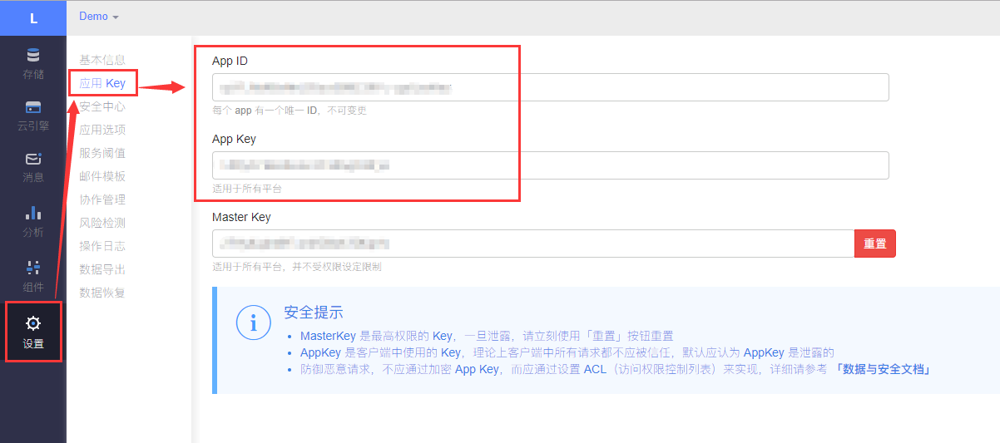
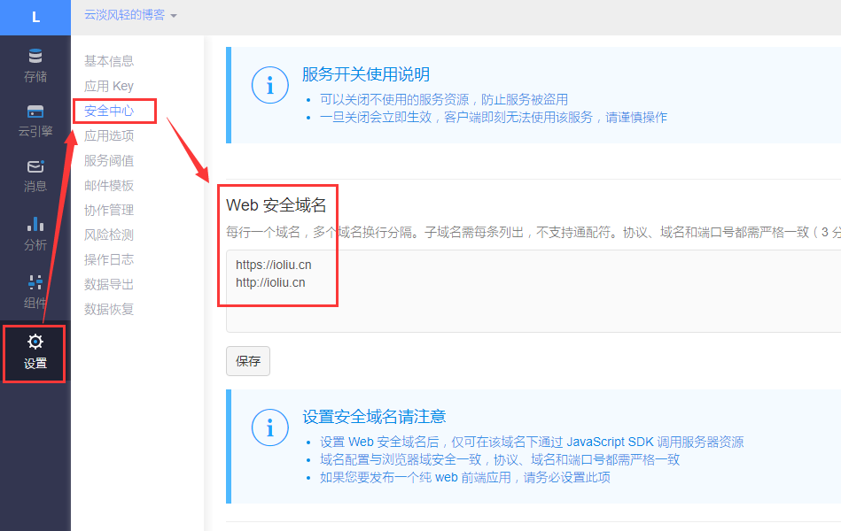
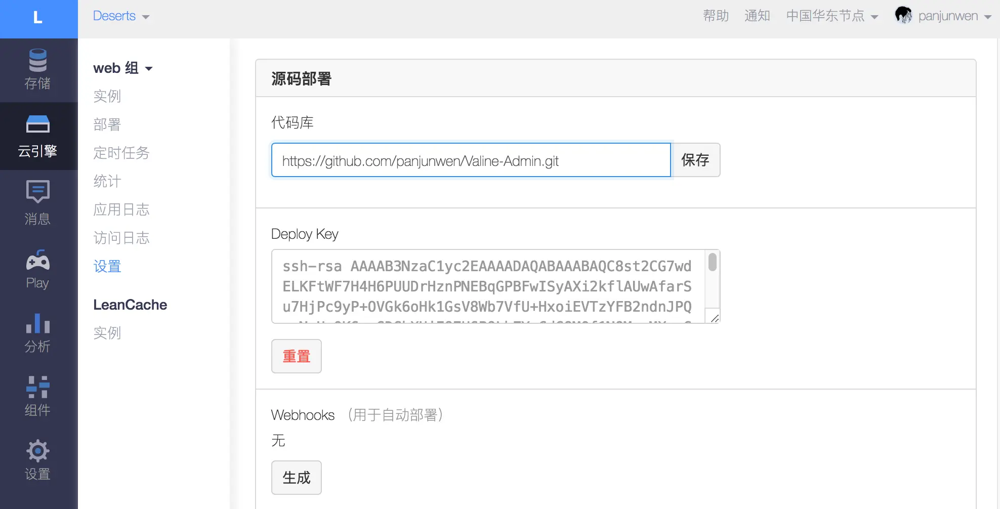
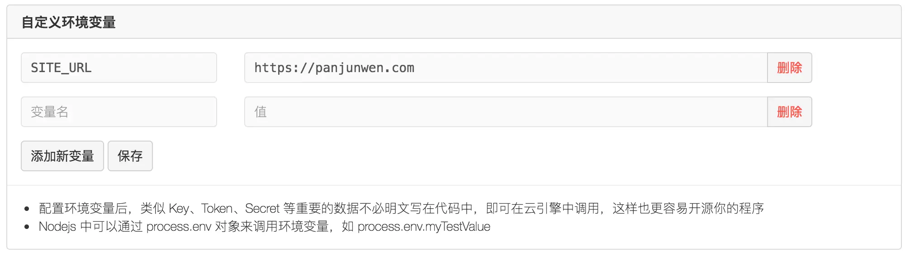
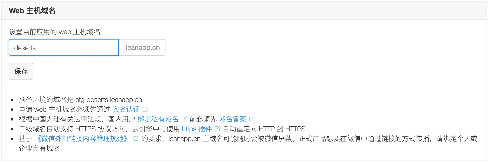
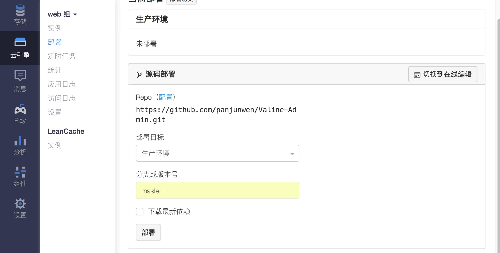
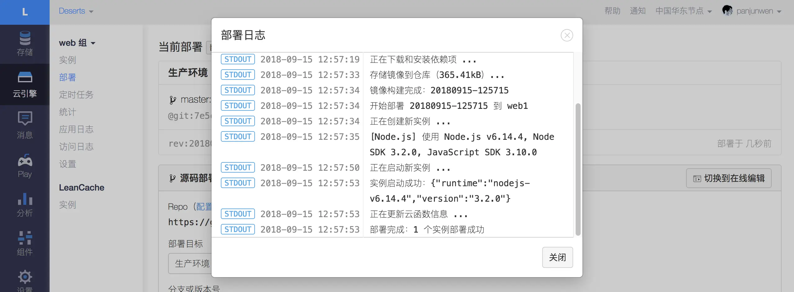
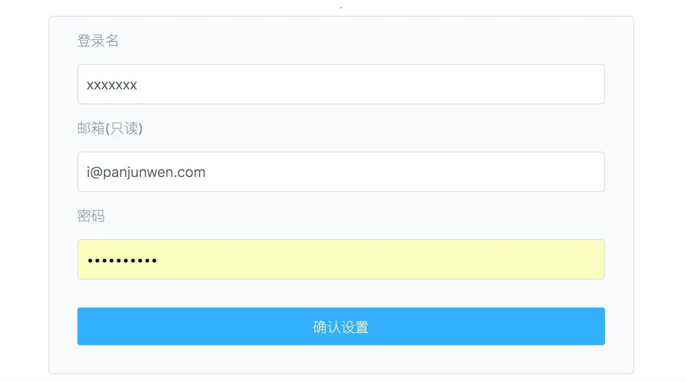

本篇文章介绍yilia主题添加valine评论的方法
闲话最后说，先来看方法（本篇文章所有图片均来自官方文档）
注意：近期由于国际版 LeanCloud 域名更新，valine评论系统部署后可能无法使用！参看：
https://github.com/xCss/Valine/issues/340
快速开始
根据valine官方文档，先要在LeanCloud获取APP ID和APP Key
登录或注册LeanCloud，建议注册国际版用户，不需要绑定域名，但是都需要绑定手机号
进入控制台后点击左下角创建应用，选择开发版
应用创建好以后，进入刚刚创建的应用，选择左下角的设置>应用Key，然后就能看到你的APP ID和APP Key了（复制下来）：

评论数据管理
由于Valine是无后端评论系统，所以也就没有开发评论数据管理功能。请自行登录Leancloud应用管理。
具体步骤：登录>选择你创建的应用>存储>选择Class Comment，然后就可以尽情的发挥你的权利啦
当然，你也可以配合
@DesertsP开发的Valine-Admin进行评论数据管理（下面在valine进阶有介绍）
安全域名
为了你的数据安全，请设置自己的安全域名：

这里简单说明一下，如果你的博客是在github上托管，输入自己的博客首页地址以及本地hexo服务器地址即可（下面供参考）
1 | https://xxx.github.io |
主题添加valine评论模块
首先找到主题评论模块文件
定位文件themes\yilia\layout\_partial\article.ejs，找到导入评论模块的代码<% if (!index && post.comments){ %>
在<% if (!index && post.comments){ %>下面添加
1 | <% if (theme.valine && theme.valine.enable){ %> |
在themes\yilia\layout\_partial\post文件夹下创建valine.ejs文件
将以下代码添加到valine.ejs文件中，valine需要用到Valine.min.js文件，引用cdn库最新版，也可以将文件下载到本地，本地引用
官方推荐使用的cdn：unpkg，这里以jsdelivr为例
实际上需要两个js文件，最新版本中，引用Valine.min.js文件会自动从网络上调用av-min.js文件，不需要手动引用，取决于valine版本
1 | <style> |
valine评论会通过js生成自己的样式，与yilia主题有些冲突，进行了简单适配（根据自己需要进行更改）
注意：lang变量，根据自己需要修改
最后，在主题themes\yilia\_config.yml文件中添加valine配置
1 | valine: |
各个配置项含义参考valine官方文档中配置项
根据自己需要更改，与上面valine.ejs文件对应
其中：maxLength为评论框允许输入的最大字符数，防止恶意刷评而追加的设定，如不需要请手动删除valine.ejs与_config.yml关联代码serverURLs为服务器地址，参看：LeanCloud》国际版》设置》应用凭证》服务器地址》REST API 服务器地址，xxx为appId的前八位
使用valine
主题themes\yilia\_config.yml文件valine配置中enable设置为true，将上面复制的APP ID和APP Key添加到对应的appId和appKey中
LeanCloud》国际版》设置》应用凭证》服务器地址》REST API 服务器地址，添加至serverURLs中
启动本地服务hexo s
在浏览器中预览，valine评论模块出现
如果想对某篇文章关闭评论，在文章开头Front-matter菜单中添加comments: false属性（默认都开启评论）
使用valine评论的文章阅读量统计功能
参看官方文档：https://valine.js.org/visitor.html
Valine 从 v1.2.0 开始支持文章阅读量统计。
1 | new Valine({ |
此段代码与官方不同，旨在解决使用valine评论的文章阅读量统计功能，本地预览文章也会增加阅读量的问题
如果开启了阅读量统计，Valine 会自动检测 leancloud 应用中是否存在Counter类，如果不存在会自动创建，无需手动创建~
Valine会自动查找页面中class值为leancloud_visitors的元素，获取其id为查询条件。并将得到的值填充到其class的值为leancloud-visitors-count的子元素里：
1 | <!-- id 将作为查询条件 --> |
下面以yilia主题为例，应用valine评论的文章阅读量统计功能
配置
在主题配置文件中valine下添加如下配置：
1 | valine: |
定位主题文件themes\yilia\layout\_partial\article.ejs在header标签下导入date语句下面添加（添加位置在文章日期的下面）
1 | <header class="article-header"> |
参考官方文档，将span标签的id修改为文章路径：url_for(post.path)，data-flag-title属性的值修改为post.title。
添加基于valine实现的判断条件，div标签添加color属性使颜色与日期颜色相匹配（适配yilia主题），可以根据自己需要进行修改。
阅读量统计数据可以在leancloud 应用中修改。
到此，yilia主题添加valine评论完成
以下内容为：
配合@DesertsP开发的Valine-Admin进行评论数据管理，这里简称valine进阶
通过Valine-Admin，我们可以建立一个valine评论后台管理，并且实现邮件提醒（官方自带的邮件提醒功能将在v1.4.0发布时下线，请使用自带邮件提醒的用户注意更改为第三方邮件提醒）
valine进阶
Valine Admin 是 Valine 评论系统的后端功能补充和增强，主要实现评论邮件通知、评论管理、垃圾评论过滤等功能。
支持完全自定义的邮件通知模板，基于Akismet API实现准确的垃圾评论过滤。
云引擎”一键”部署
（建议使用LeanCloud国际版，减少不必要的麻烦。）
1.在Leancloud云引擎设置界面，填写代码库并保存：https://github.com/DesertsP/Valine-Admin.git
建议使用track23修改的允许跨域请求的Valine-Admin进行部署：https://github.com/track23/Valine-Admin.git
部署失败，可以参照提交记录自行修改后，重新部署

2.在设置页面，设置环境变量以及 Web 二级域名。

下面显示必填字段及一些更详细的说明
| 变量 | 示例 | 说明 |
|---|---|---|
| SITE_NAME | Deserts | [必填]填写自己的博客名称 |
| SITE_URL | https://xxx.github.io | [必填]博客首页地址，结尾不需要/ |
| SMTP_SERVICE | [新版支持]邮件服务提供商，支持 QQ、163、126、Gmail 以及更多 | |
| SMTP_USER | xxxxxx@qq.com | [必填]SMTP登录用户，就是输入自己的邮箱 |
| SMTP_PASS | ccxxxxxxxxch | [必填]SMTP登录密码，如果是QQ邮箱，填写在邮箱设置中获取登录第三方邮箱客户端的授权码，如果QQ邮箱设有独立登录密码的话，自己尝试吧 |
| SENDER_NAME | Deserts | [必填]评论邮件通知的发件人 |
| SENDER_EMAIL | xxxxxx@qq.com | [必填]发件邮箱，填写自己的邮箱即可 |
| ADMIN_URL | https://xxx.leanapp.cn/ | [建议]Web主机二级域名，用于自动唤醒，其实就是评论后台管理的域名，需要参考下面Web主机域名填写，国际版与国内版不一样 |
以上必填参数请务必正确设置。
二级域名用于评论后台管理，如https://deserts.leanapp.cn（国内版），https://deserts.avosapps.us（国际版），取决于自己注册的用户。

3.切换到部署标签页，选择Git源码部署，分支使用master，点击部署即可

第一次部署需要花点时间。

4.评论管理。
访问设置的二级域名https://二级域名.leanapp.cn/sign-up，注册管理员登录信息，如：https://deserts.leanapp.cn/sign-up
国际版设置的二级域名https://二级域名.avosapps.us/sign-up

注册成功后会自动跳转至登录页
此后，可以通过https://二级域名.leanapp.cn/ 管理评论。
国际版：https://二级域名.avosapps.us/
5.定时任务设置
因流控原因，通过定时任务唤醒体验版实例失败，建议升级至标准版云引擎实例避免休眠
因为任务唤醒体验版限制，关于定时任务设置跳过，解决方法参看下文唤醒云引擎
6.邮件通知模板
邮件通知模板在云引擎环境变量中设定，可自定义通知邮件标题及内容模板。
默认的邮件通知模板是无法看到具体是哪篇文章的评论，这里简单进行了一下修改，如需样式定制，还请参看官方文档
环境变量：MAIL_TEMPLATE
修改后被@通知邮件内容模板如下：
1 | <div style="border-top:2px solid #12ADDB;box-shadow:0 1px 3px #AAAAAA;line-height:180%;padding:0 15px 12px;margin:50px auto;font-size:12px;"><h2 style="border-bottom:1px solid #DDD;font-size:14px;font-weight:normal;padding:13px 0 10px 8px;">您在<a style="text-decoration:none;color: #12ADDB;"href="${SITE_URL}"target="_blank">${SITE_NAME}</a>上的评论有了新的回复</h2>${PARENT_NICK}同学，您曾发表评论：<div style="padding:0 12px 0 12px;margin-top:18px"><div style="background-color: #f5f5f5;padding: 10px 15px;margin:18px 0;word-wrap:break-word;">${PARENT_COMMENT}</div><p><strong>${NICK}</strong>回复说：</p><div style="background-color: #f5f5f5;padding: 10px 15px;margin:18px 0;word-wrap:break-word;">${COMMENT}</div><p>您可以点击<a style="text-decoration:none; color:#12addb"href="${POST_URL}"target="_blank">查看回复的完整內容</a>，欢迎再次光临<a style="text-decoration:none; color:#12addb"href="${SITE_URL}"target="_blank">${SITE_NAME}</a>。<br></p><p>详细链接：${POST_URL}</p></div></div> |
环境变量：MAIL_TEMPLATE_ADMIN
修改后博主通知邮件内容模板如下：
1 | <div style="border-top:2px solid #12ADDB;box-shadow:0 1px 3px #AAAAAA;line-height:180%;padding:0 15px 12px;margin:50px auto;font-size:12px;"><h2 style="border-bottom:1px solid #DDD;font-size:14px;font-weight:normal;padding:13px 0 10px 8px;">您在<a style="text-decoration:none;color: #12ADDB;" href="${SITE_URL}" target="_blank">${SITE_NAME}</a>上的文章有了新的评论</h2><p><strong>${NICK}</strong>回复说：</p><div style="background-color: #f5f5f5;padding: 10px 15px;margin:18px 0;word-wrap:break-word;"> ${COMMENT}</div><p>您可以点击<a style="text-decoration:none; color:#12addb" href="${POST_URL}" target="_blank">查看回复的完整內容</a><br></p><p>详细链接：${POST_URL}</p></div></div> |
上述两个环境变量在云引擎手动添加即可，效果为在邮件最后一行添加评论详细链接，旨在快速定位是哪篇文章的评论。
其他功能这里也不过多介绍，感兴趣的请参看Valine Admin文档
到此，valine进阶基本结束，详细内容还请参看官方文档。
接下来是如何唤醒云引擎
唤醒云引擎
参看leancloud官方公告关于对体验版云引擎定时任务进行适当流控的说明
官方根据服务器的负载，对定时任务添加流控，通过定时任务唤醒容器将有可能会失败
可以尝试更换定时任务时间，错开流控高峰，但是不治本。
这里提供一个激活云引擎的方法，参看：宅日记博客
思路就是北京时间8点到晚上23点只要有人访问博客就会触发js发ajax请求唤醒云引擎。由于云引擎睡眠的时候发请求不一定会成功（但是有请求就会醒）所有没有做请求失败处理。请求发送后设置cookie避免20分钟内刷新等操作重复发请求。
简单说明一下：
在valine.ejs文件中添加
1 | new Valine({ |
通过fetch实现类似jquery的ajax请求（不需要引入jQuery），当有人访问带有valine评论的页面时，js请求你云引擎的地址，激活云引擎
如果你的云引擎地址没有允许跨域请求，控制台会报跨域错误（可以忽略），在控制台提示错误之前，浏览器已经请求了你的云引擎地址
如果你讨厌控制台报错，但是自己又不会改，建议直接部署 宅日记博客 修改的 valine-admin ，fork的是DesertsP写的valine-admin。
通过此机制达到激活云引擎的目的，云引擎激活后定时任务不会再遇到流控问题
你也可以尝试删除云引擎中的定时任务，只通过此方式激活云引擎
在主题配置文件valine的配置中添加ADMIN_URL字段设置云引擎地址，方便管理
1 | valine: |
文中提到通过github action来定时唤醒云引擎，参看：小康博客
个人感觉有些复杂，没有实践，而且这个方法足够啦
最后
提到yilia主题，说说yilia主题内置的几个评论系统
yilia主题总共有5个评论可选，分别是：1、多说；2、网易云跟帖；3、畅言；4、Disqus；5、Gitment
简单介绍一下
多说和网易云跟帖服务已经关闭（可以自行在主题中删除相应代码），使用畅言博客域名需要备案。
Disqus仿佛是美国的，国内使用需要翻墙。Gitment就不过多介绍了，一般的主题都有
简单谈谈为什么用valine
1.免费
2.支持匿名评论，国内访问速度快，国际版账户不需要绑定域名
3.评论可以删除